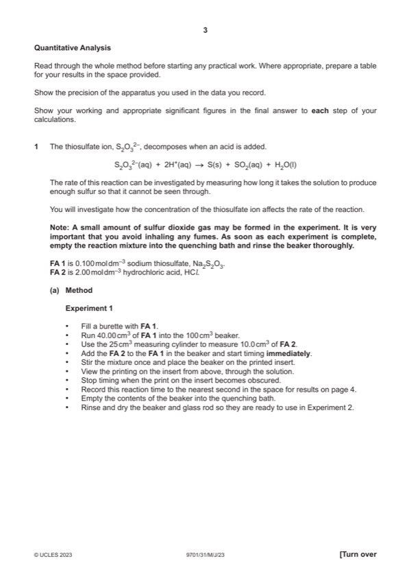
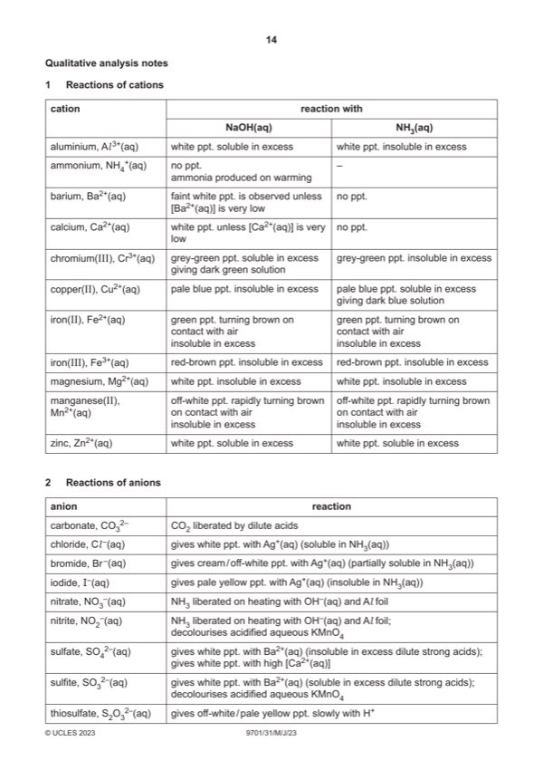

Question 1

Original paper page 3

Original paper page 14
Part 1(a) — solution
Answer: OR units of cm3, s or s–1 against each entry · AND all volumes given to 2 dp with the final digit being 0 or 5 cm3 · AND all volumes of FA 1 not less than 15.00 cm3
I Single table to show results for five experiments (volume of FA 1, volume of water, time and rate) 8
II Appropriate headings and units for recorded data given
Volume units for headings: / cm3 or (cm3) or in cm3
Time units for headings: / s or (s) or in seconds
Rate units for headings: / s–1 or (s−1) or per second
OR units of cm3, s or s–1 against each entry
III All times recorded to nearest second
AND all volumes given to 2 dp with the final digit being 0 or 5 cm3
IV Three additional volumes chosen with intervals not less than 5 cm3
AND all volumes of FA 1 not less than 15.00 cm3
V In all additional experiments water is added to make a total of 40.00 cm3
VI All rates correctly calculated using 1000 / time
All recorded to minimum of two significant figures or integer value AND from at least three experiments
Accuracy marks
Time for 20.00 cm3 of FA 1
Calculate ratio: to two decimal places
Time for 40.00 cm3 of FA 1
VII Award for ratio 1.70–2.40
VIII Award for ratio 1.90–2.20
Mark points
- Correct result: OR units of cm3, s or s–1 against each entry
- Correct result: AND all volumes given to 2 dp with the final digit being 0 or 5 cm3
- Correct result: AND all volumes of FA 1 not less than 15.00 cm3
Part 1(b) — solution
Answer: AND anomalous point(s), if any, should be ringed
I Rate on y-axis and volume of FA 1 on x-axis with unambiguous labels or units 4
II Linear scales (starting at 0,0) chosen so that the graph occupies at least half the available length for both axes
III Five recorded points plotted correctly
IV Draws a line of best fit straight line or smooth curve
AND anomalous point(s), if any, should be ringed
2023 Page 6 of 11
9701/31 Cambridge International AS & A Level – Mark Scheme May/June 2023
Mark points
- Correct result: AND anomalous point(s), if any, should be ringed
Part 1(c) — solution
Answer: OR no / not directly proportional and line not through origin / curve
Yes / directly proportional and as straight line through / close to origin 1
OR no / not directly proportional and line not through origin / curve
Mark points
- Correct result: OR no / not directly proportional and line not through origin / curve
Part 1(d) — solution
Answer: OR marks on rate and volume axes within half a small square
- [M1] Line drawn at 12.50 cm3 and line drawn across to rate axis 2
- [M2] Time correctly calculated from candidate’s rate
Mark points
- [M1] Line drawn at 12.50 cm3 and line drawn across to rate axis 2
- [M2] Time correctly calculated from candidate’s rate
Part 1(e) — solution
- [M1] Solution is less deep / shallower 2
- [M2] Time would be longer because of the need to have more S / solid to obscure insert owtte
Mark points
- [M1] Solution is less deep / shallower 2
- [M2] Time would be longer because of the need to have more S / solid to obscure insert owtte